Autoionization of water:
When pure water is present, there is still an equilibrium:
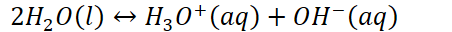{width="4.708333333333333in" height="0.3333333333333333in"}
One molecule of water (the acid in this case) donates a proton to another molecule of water (the base)
{width="3.03125in" height="0.3541666666666667in"}
{width="3.1979166666666665in" height="0.3541666666666667in"}
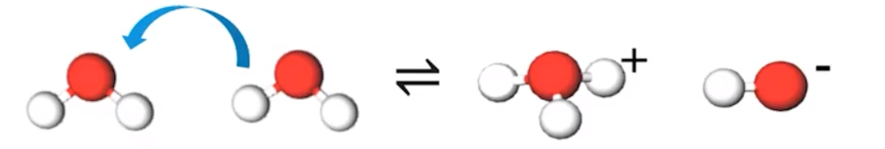{width="6.197916666666667in" height="1.0416666666666667in"}
<!-- -->
Temperature dependence:
{width="4.927083333333333in" height="0.3541666666666667in"}
{width="8.916666666666666in" height="0.3541666666666667in"}
Because temperature favors the endothermic direction, and more product is formed when temperature rises,
The autoionization of water is endothermic in the forward direction
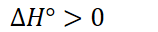{width="1.6458333333333333in" height="0.3333333333333333in"}
The neutral pH changes according to temperature
<!-- -->
pH scale: a simplified way that communicates whether a solution is acidic, basic, or neutral
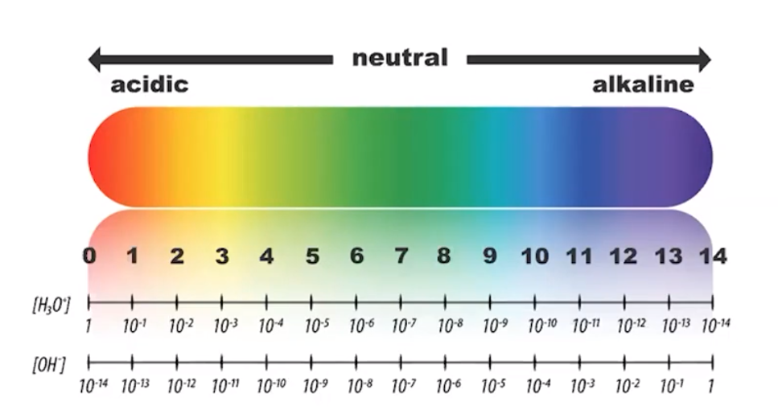{width="5.979166666666667in" height="3.1875in"}
Acidic: lots of hydronium (potential proton donors)
Basic: lots of hydroxide (potential proton acceptors)
Bases do not disassociate: they protonate (accept a proton)
pH > 7
{width="3.78125in" height="0.3541666666666667in"}
{width="3.96875in" height="0.3541666666666667in"}
{width="3.7083333333333335in" height="0.3541666666666667in"}
Simplifies a large range of values into values 1-14
{width="9.791666666666666in" height="0.3541666666666667in"}
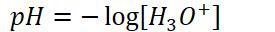{width="2.8645833333333335in" height="0.3333333333333333in"}
{width="5.614583333333333in" height="0.3541666666666667in"}
{width="6.083333333333333in" height="0.3541666666666667in"}
Anything relating to acid/base with p in front has been taken the -log of!
<!-- -->
Therefore,
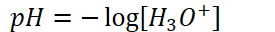{width="2.8645833333333335in" height="0.3333333333333333in"}
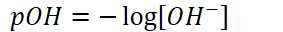{width="2.9479166666666665in" height="0.3333333333333333in"}
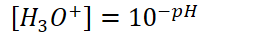{width="2.6354166666666665in" height="0.34375in"}
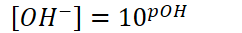{width="2.5208333333333335in" height="0.34375in"}
{width="3.3854166666666665in" height="0.3541666666666667in"}
{width="3.2708333333333335in" height="0.3541666666666667in"}
{width="3.75in" height="0.34375in"}
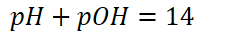{width="2.5729166666666665in" height="0.3333333333333333in"}
Remember: [] means molarity--give appropriate units
Estimating pH
pH = 8.693
Whole number: magnitude (power)
Decimal: measurement
{width="4.072916666666667in" height="0.3541666666666667in"}
If coefficient is greater than 1 and less than 10:
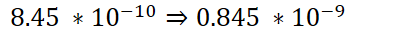{width="4.15625in" height="0.34375in"}
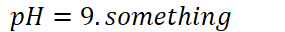{width="2.96875in" height="0.3333333333333333in"}
Close enough